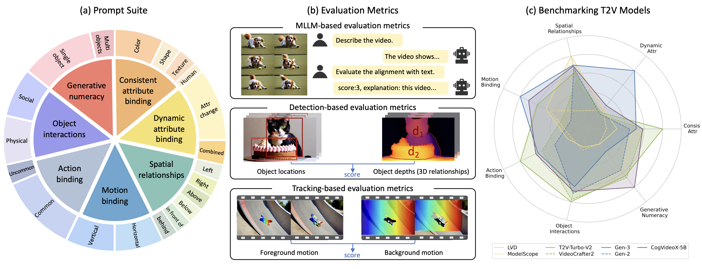
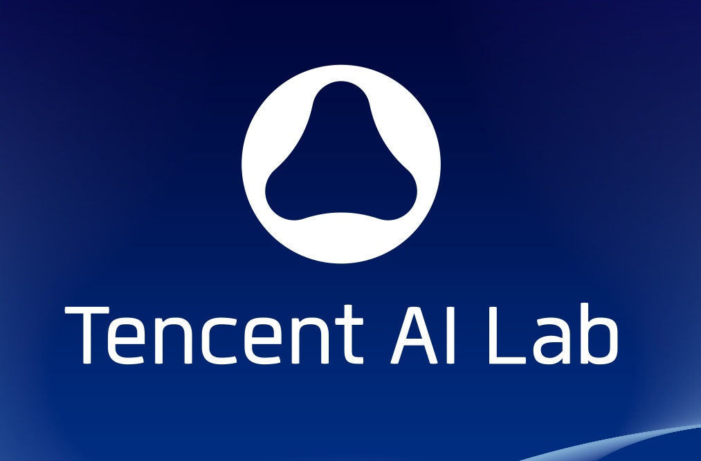

|
NVIDIA Research Santa Clara, CA E-mail / CV / Google Scholar / Github / Twitter / LinkedIn |

|
Biography
I am a Research Scientist at NVIDIA Research, Deep Imagination Research Group. I am also a final-year Ph.D. at CUHK Multi-Media Lab (MMLab), supervised by Prof. Dahua Lin, Prof. Ziwei Liu, and Prof. Xihui Liu.
Before that, I received the Bachelor's degree at Zhejiang University in 2021, advised by Prof. Xiaowei Zhou.
I am fortunate to have extensive industrial experience during Ph.D. study, with multiple internships at several leading research institutes, including NVIDIA Research, Snap Research, Tencent AI Lab, SenseTime Research, and Shanghai AI Lab.
My research interests include computer vision and generative modeling, especially the foundation GenAI pre-training / post-training, vision-language models, multi-modal tokenizers, and their applications in digital humans and physical AI.
I am always open to discussions and collaborations, feel free to drop me an email if you are interested in :)
News
- [02/2025] Two papers are accepted to CVPR 2025.
- [01/2025] Cosmos won the Best of CES, Best of AI, and Best Overall Awards in CNET 2025!
- [01/2025] We release Cosmos, a world foundation model platform for Physical AI. Models open-sourced on Github and HF!
- [01/2025] Four papers are accepted to ICLR 2025.
- [12/2024] One paper is accepted to AAAI 2025.
- [11/2024] We release Cosmos-Tokenizer, a suite of SOTA image/video tokenizers with models available on Github and HF!
- [09/2024] Honored to receive ECCV 2024 Outstanding Reviewer Award. Great thanks for the recognition!
Industrial Research

|
Cosmos World Foundation Model Platform for Physical AI
Contributions: Auto-Regressive Foundation Model Pre-Training & Post-Training. (CES'25 Best of AI, Best Overall)
Webpage /
Project /
Paper /
Blog /
Github /
HuggingFace /
Demo /
Preview /
Keynote (Jensen Huang, CES'25)
|

|
Cosmos Tokenizer: A Suite of Image and Video Neural Tokenizers
Contributions: Continuous/Discrete Image/Video Tokenizers.
|
Selected Publications [ Full List ] (* indicates equal contribution)

|
HMAR: Efficient Hierarchical Masked AutoRegressive Image Generation
IEEE/CVF Conference on Computer Vision and Pattern Recognition (CVPR), 2025.
|
|  |
T2V-CompBench: A Comprehensive Benchmark for Compositional Text-to-video Generation
IEEE/CVF Conference on Computer Vision and Pattern Recognition (CVPR), 2025.
|

|
3DTrajMaster: Mastering 3D Trajectory for Multi-Entity Motion in Video Generation
International Conference on Learning Representations (ICLR), 2025.
|

|
High-Quality Joint Image and Video Tokenization with Causal VAE
International Conference on Learning Representations (ICLR), 2025.
|

|
Accelerating Auto-regressive Text-to-Image Generation with Training-free Speculative Jacobi Decoding
International Conference on Learning Representations (ICLR), 2025.
|

|
EdgeRunner: Auto-regressive Auto-encoder for Artistic Mesh Generation
International Conference on Learning Representations (ICLR), 2025.
|

|
HumanGaussian: Text-Driven 3D Human Generation with Gaussian Splatting
IEEE/CVF Conference on Computer Vision and Pattern Recognition (CVPR), 2024. (Highlight, Top 2.8%)
|

|
HyperHuman: Hyper-Realistic Human Generation with Latent Structural Diffusion
International Conference on Learning Representations (ICLR), 2024. (Review Score 6, 6, 8, 10, Top 1.6%, Rank)
|

|
Semantic-Aware Implicit Neural Audio-Driven Video Portrait Generation
European Conference on Computer Vision (ECCV), 2022. (Oral, Top 2.7%)
|

|
Audio-Driven Co-Speech Gesture Video Generation
Advances in Neural Information Processing Systems (NeurIPS), 2022. (Spotlight, Top 5%)
|

|
Learning Hierarchical Cross-Modal Association for Co-Speech Gesture Generation
IEEE/CVF Conference on Computer Vision and Pattern Recognition (CVPR), 2022.
Also appears at CVPR 2022 Sight and Sound Workshop. [5-min Invited Talk] (link)
|

|
Taming Diffusion Models for Audio-Driven Co-Speech Gesture Generation
IEEE/CVF Conference on Computer Vision and Pattern Recognition (CVPR), 2023.
|

|
Visual Sound Localization in the Wild by Cross-Modal Interference Erasing
AAAI Conference on Artificial Intelligence (AAAI), 2022.
|

|
TC4D: Trajectory-Conditioned Text-to-4D Generation
European Conference on Computer Vision (ECCV), 2024.
|

|
Object-Compositional Neural Implicit Surfaces
European Conference on Computer Vision (ECCV), 2022.
|

|
BrushNet: A Plug-and-Play Image Inpainting Model with Decomposed Dual-Branch Diffusion
European Conference on Computer Vision (ECCV), 2024.
|

|
TextCraftor: Your Text Encoder Can be Image Quality Controller
IEEE/CVF Conference on Computer Vision and Pattern Recognition (CVPR), 2024.
|
Experiences

|
Research Scientist.
NVIDIA Research, Deep Imagination Research Group.
Manager: Ming-Yu Liu.
|
|
|
Generative AI Research Intern, Deep Imagination Research, NVIDIA Research.
Topic: Image/Video Foundation Models, Tokenizers, Multi-Modal Language Models.
|
|
Research Visiting Student, Toronto Computational Imaging Group.
Topic: Text-to-4D Generation.
Hosted by: Sherwin Bahmani, David B. Lindell.
|
|
|  |
Research Intern, Tencent AI Laboratory.
Topic: Text-Driven 3D Human Generation.
Supervised by: Xiaohang Zhan, Ying Shan.
|
|
Research Intern, Creative Vision Group, Snap Research.
Topic: Human Generation Foundation Model.
|
|
|
Research Intern, Digital Content Group, Shanghai AI Laboratory.
Topic: Digital Human, Gesture Generation.
|
|
|
|
Research Intern, Intelligent Video Group, SenseTime Research.
Topic: Digital Human, Face Animation.
|
Invited Talks
- AI TIME: HyperHuman: Hyper-Realistic Human Generation with Latent Structural Diffusion. 2024
- AI TIME: Audio-Driven Co-Speech Gesture Video Generation. 2023
- TechBeat: Semantic-Aware Implicit Neural Audio-Driven Video Portrait Generation. 2022
Professional Services
- Conference Program Committee / Reviewer: CVPR, ECCV, ICCV, SIGGRAPH, SIGGRAPH Asia, NeurIPS, ICML, ICLR, AISTATS, AAAI.
- Journal Reviewer: TPAMI, IJCV, TVCG, EG, CGF, PG.
Selected Honors & Awards
- CNET 2025 Best of CES, Best of AI, and Best Overall. 2025
- ECCV Outstanding Reviewer Award. 2024
- CVPR Travel Award. 2024
- ICLR Travel Award. 2024
- National Scholarship. 2019, 2020
- Hong Kong Ph.D. Fellowship Scheme (HKPFS). 2021- 2025
- Outstanding Graduate of Zhejiang Province. 2021
- Outstanding Bachelor Thesis Award of Zhejiang University, Top 1%. 2021
- UCLA CSST Scholarship Program. 2020
- SenseTime Scholarship. 2020
- Tang Lixin Scholarship. 2019
- First Class Scholarship for Academic Excellence. 2019, 2020
Teaching Experience
- ENGG 1120, Linear Algebra for Engineers. Spring 2022.
- ENGG 2440, Discrete Mathematics for Engineers. Fall 2021.